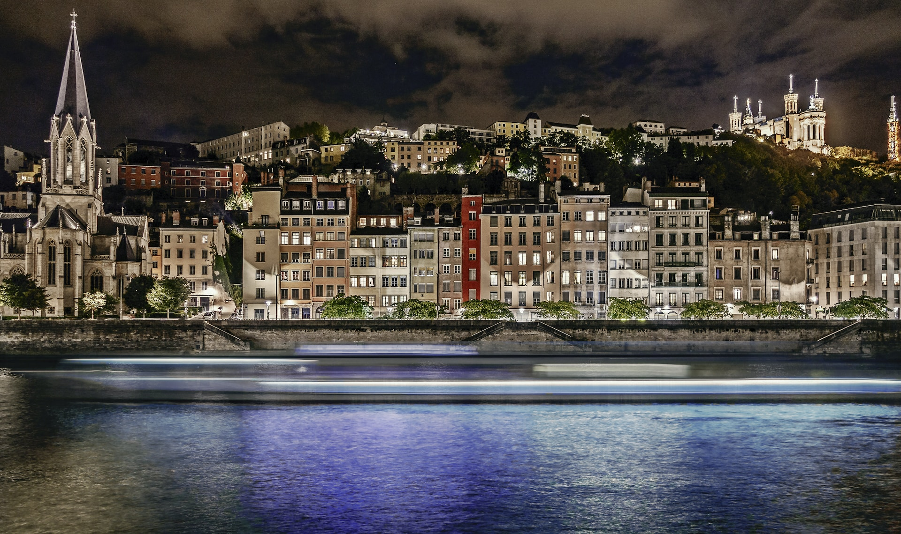
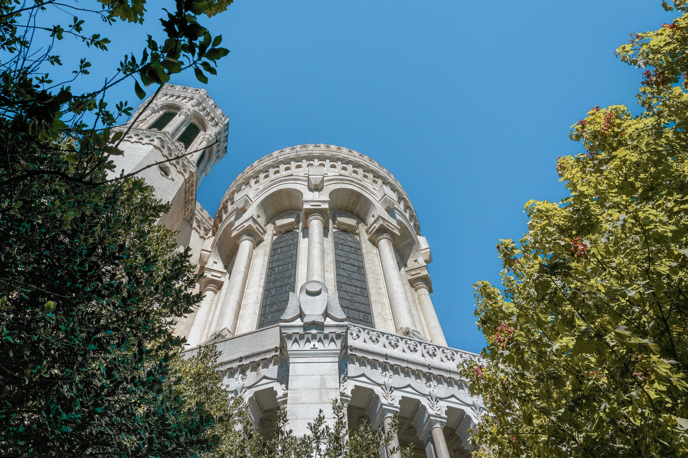
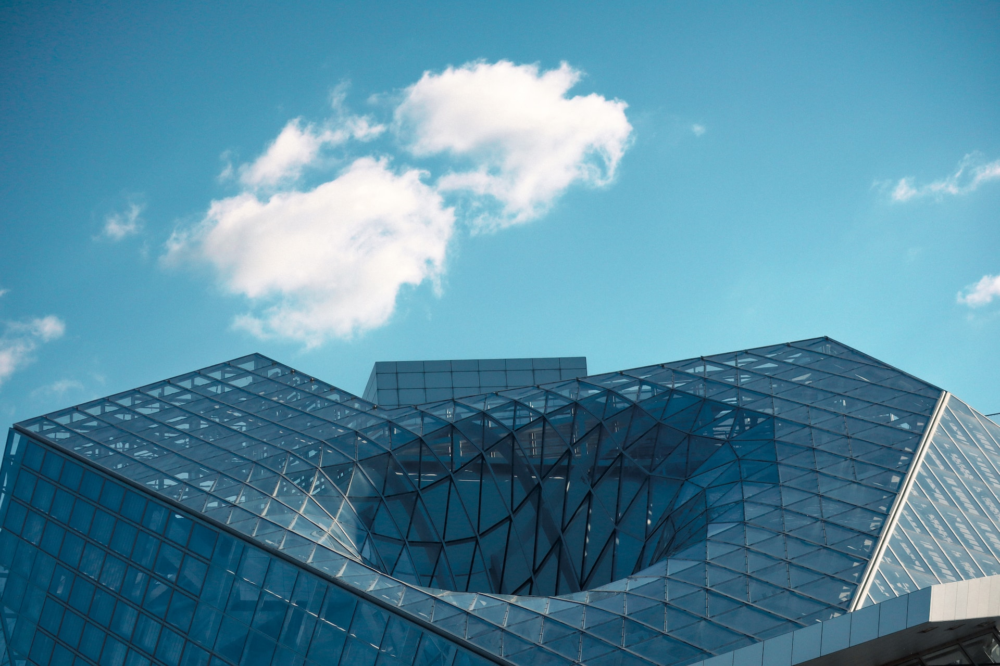
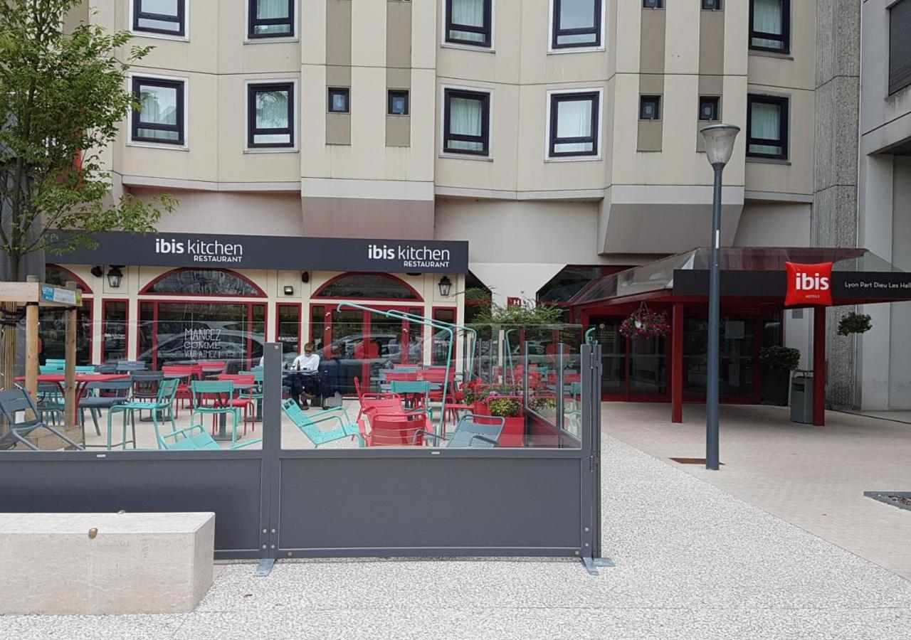
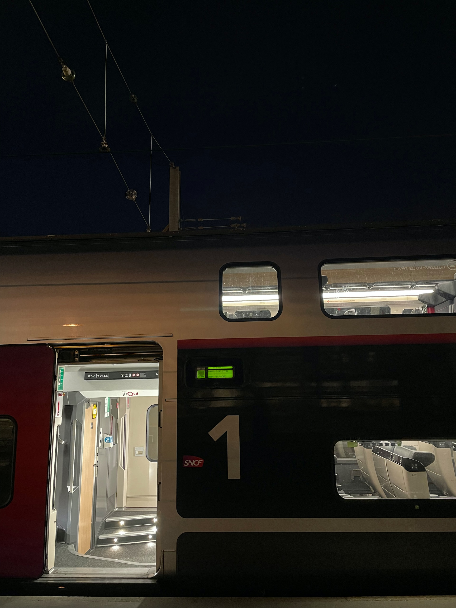

Lyon
Bienvenue à Lyon!
Welkom in Lyon, de culinaire hoofdstad van Frankrijk en een stad doordrenkt van geschiedenis en cultuur.Gelegen aan de samenvloeiing van de Rhône en de Saône, biedt Lyon een betoverende mix van architectonische pracht, gastronomische hoogstandjes en levendige festivals.
Verken de oude stad, een UNESCO-werelderfgoed, met zijn smalle straatjes, geplaveide pleinen en prachtige renaissancegebouwen.
Bewonder de majestueuze kathedraal van Lyon en ontdek de charmante traboules, geheime doorgangen die je naar verborgen binnenplaatsen leiden.
Als gastronomische hoofdstad van Frankrijk biedt Lyon een culinaire ervaring van wereldklasse.
Proef de beroemde Lyonnaise gerechten, zoals coq au vin en quenelles, in traditionele bouchons en geniet van de lokale Beaujolais-wijnen.
Mis de jaarlijkse Fête des Lumières niet, een betoverend lichtfestival dat de stad in een sprookjesachtige ambiance hult.
Lyon heeft ook een bruisende kunst- en cultuurscene, met musea zoals het Musée des Beaux-Arts en het Musée de la Confluence die een schat aan kunst en geschiedenis tentoonstellen.
Laat je betoveren door de schoonheid en smaken van Lyon, waar elke hoek een nieuwe ontdekking biedt.
De must-sees van Lyon
Vieux Lyon
Duik in de betoverende charme van Vieux Lyon, de oude stad van Lyon.
Wandel door de smalle steegjes, bewonder de prachtige renaissancearchitectuur en ontdek de verborgen traboules die je leiden naar schilderachtige binnenplaatsen.
Proef de lokale specialiteiten in de traditionele bouchons en geniet van de levendige sfeer.
Duik in de betoverende charme van Vieux Lyon, de oude stad van Lyon.
Wandel door de smalle steegjes, bewonder de prachtige renaissancearchitectuur en ontdek de verborgen traboules die je leiden naar schilderachtige binnenplaatsen.
Proef de lokale specialiteiten in de traditionele bouchons en geniet van de levendige sfeer.


Basilique Notre-Dame de Fourvière
Bezoek de imposante Basilique Notre-Dame de Fourvière, een meesterwerk van de neogotische architectuur.
Bewonder het adembenemende interieur, bezoek het aangrenzende museum en geniet van een panoramisch uitzicht over de stad vanaf de heuvel van Fourvière.
Een plek van spirituele betekenis en indrukwekkende schoonheid.
Bezoek de imposante Basilique Notre-Dame de Fourvière, een meesterwerk van de neogotische architectuur.
Bewonder het adembenemende interieur, bezoek het aangrenzende museum en geniet van een panoramisch uitzicht over de stad vanaf de heuvel van Fourvière.
Een plek van spirituele betekenis en indrukwekkende schoonheid.
Musée des Confluences
Verken het futuristische Musée des Confluences, een museum gewijd aan kunst, geschiedenis en wetenschap.
Laat je verbazen door de opvallende architectuur en ontdek fascinerende tentoonstellingen die de evolutie van de mensheid en de wereld verkennen.
Een unieke plek die zowel intrigeert als inspireert.
Verken het futuristische Musée des Confluences, een museum gewijd aan kunst, geschiedenis en wetenschap.
Laat je verbazen door de opvallende architectuur en ontdek fascinerende tentoonstellingen die de evolutie van de mensheid en de wereld verkennen.
Een unieke plek die zowel intrigeert als inspireert.

Accommodatie
Tijdens je verblijf logeer je in het IBIS Hotel Lyon Part Dieu Les Halles.
ibis Lyon Part Dieu Les Halles ligt in het 3e arrondissement van Lyon, in het hart van het zakencentrum La Part Dieu, tegenover de Halles Paul Bocuse.
Het hotel heeft 216 slaapkamers met airconditioning, Sweet bed by ibis, een restaurant met terras, een 24/7 receptiebar waar u kunt genieten van een cocktail, 2 vergaderruimten, een speelruimte met flipperkast, tafelvoetbal, biljart en onbeperkt WiFi.
ibis Lyon Part Dieu Les Halles ligt in het 3e arrondissement van Lyon, in het hart van het zakencentrum La Part Dieu, tegenover de Halles Paul Bocuse.
Het hotel heeft 216 slaapkamers met airconditioning, Sweet bed by ibis, een restaurant met terras, een 24/7 receptiebar waar u kunt genieten van een cocktail, 2 vergaderruimten, een speelruimte met flipperkast, tafelvoetbal, biljart en onbeperkt WiFi.

De treinreis

Brussel is meermaals per dag verbonden met Lyon via een rechtstreekse TGV-verbinding.
Voor de heenreis hebt u de volgende reisopties:
Voor de terugreis hebt u de volgende reisopties:
Voor de heenreis hebt u de volgende reisopties:
- Vertrek in Brussel-Zuid om 06:35, aankomst in Lyon om 10:30.
- Vertrek in Brussel-Zuid om 08:17, aankomst in Lyon om 12:00.
- Vertrek in Brussel-Zuid om 10:17, aankomst in Lyon om 14:00.
- Vertrek in Brussel-Zuid om 13:17, aankomst in Lyon om 17:00.
- Vertrek in Brussel-Zuid om 16:17, aankomst in Lyon om 20:00.
- Vertrek in Brussel-Zuid om 18:17, aankomst in Lyon om 22:00.
Voor de terugreis hebt u de volgende reisopties:
- Vertrek in Lyon om 05:50, aankomst in Brussel-Zuid om 09:43.
- Vertrek in Lyon om 08:34, aankomst in Brussel-Zuid om 12:26.
- Vertrek in Lyon om 11:00, aankomst in Brussel-Zuid om 15:25.
- Vertrek in Lyon om 14:00, aankomst in Brussel-Zuid om 17:43.
- Vertrek in Lyon om 17:00, aankomst in Brussel-Zuid om 20:43.
- Vertrek in Lyon om 19:00, aankomst in Brussel-Zuid om 22:57.
Prijzen
Deze reis is beschikbaar vanaf €400,- per persoon.Inbegrepen in de prijs zijn de heen- en terugreis, 3 overnachtingen ter plaatse inclusief ontbijt en BTW.
Op verzoek kan de reisduur steeds uitgebreid of ingekort worden.
Boek je reis via ons boekingsformulier en wij sturen je zo snel mogelijk een reisvoorstel.